Audit Trail
SCR-AUDIT-001·002·003·004·005 · 통합 조회 · 카테고리별 보기 · 변경 이력 상세 · 내보내기
감사 추적 조회
- 1.1화면 구성
- 1.2카테고리와 필터
- 1.3변경 이력 상세
1.1화면 구성
개요
임상 데이터가 언제 · 누가 · 무엇을 · 무엇에서 무엇으로 · 왜 바뀌었는지를 한 화면에 모아 보는 화면입니다. 조회 전용이라 이 화면에는 고치거나 지우는 버튼이 없습니다 — 이력은 덧붙이기만 가능하며 지워지지 않습니다 2.1. 위에서부터 준수 안내 → 카테고리 → 필터 → 목록 순서로 읽고, 한 건을 자세히 볼 때 「보기」 로 상세 창을 엽니다.
화면 설명
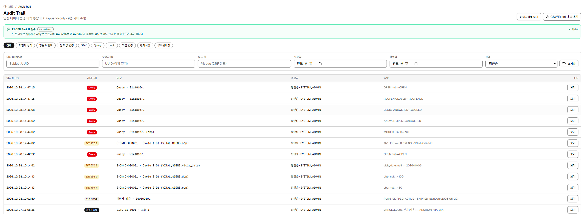
「카테고리별 보기」 — 카테고리 하나만 전용 컬럼으로 보는 화면으로 이동합니다 3.1. 누르면 먼저 「피험자 상태」 탭이 열리고, 거기에서 탭으로 옮깁니다.
「CSV/Excel 내보내기」 — 지금 걸어 둔 필터 범위를 파일로 추출합니다 4.1. 데이터 관리자 · 감사자에게만 표시되는 버튼입니다.
화면 부제가 다루는 범위를 밝힙니다 — “임상 데이터 변경 이력 통합 조회 (append-only · 9종 카테고리)”.
21 CFR Part 11 준수 안내 — 이력 보존 정책과 근거 규정 2.1 · 2.2.
카테고리 빠른 선택 — 9종 + 「전체」 1.2.
보조 필터 — 대상 Subject · 수행자 ID · 필드 키 · 시작일 · 종료일 · 정렬 1.2.
목록은 6열입니다 — 일시(KST) · 카테고리 · 대상 · 수행자 · 요약 · 조회. 시각은 모두 한국 시간으로 환산되어 표시됩니다.
「보기」 — 그 한 건의 상세 창을 엽니다 1.3. 행 아무 곳이나 눌러도 같은 창이 열립니다.
카테고리 배지 — 9종이 서로 다른 색으로 구분됩니다.
접근 경로
- • 왼쪽 메뉴 「품질·규제 > Audit Trail」 — 프로젝트에 들어온 뒤에만 나타납니다.
- • 프로젝트 대시보드 > 「감사 추적」 위젯 — 목록의 행을 누르거나 오른쪽 아래 「Audit Trail →」 를 누릅니다.
- • 같은 대시보드의 「감사 요약」 · 「카테고리 분포」 위젯은 건수만 보여 주며 눌러도 이동하지 않습니다 — 이동은 위 두 곳뿐입니다.
유의사항
오해하기 쉬운 동작
- • 이 화면은 연구책임자 · 데이터 관리자 · 감사자만 들어올 수 있습니다. 시스템 관리자는 전역 권한으로 모든 화면을 열 수 있으므로 여기에도 들어옵니다. 워크스페이스 관리자 · 연구간호사 · 임상연구모니터요원(CRA)에게는 왼쪽 메뉴에 나타나지 않으며, 주소로 직접 들어가도 권한이 필요하다는 안내만 표시됩니다. 사용자 추가 · 설정 변경 같은 관리·운영 행위 이력은 이 화면이 아니라 「운영 이력」 화면에 있습니다. 또한 연구책임자는 자기 참여 기관의 이력만 보게 됩니다 — 화면이 아니라 시스템이 자동으로 걸러 줍니다.
1.2카테고리와 필터
개요
목록을 좁히는 수단은 두 층입니다. 위쪽 카테고리 칩으로 어떤 종류의 이력을 볼지 고르고, 아래 보조 필터로 대상 · 수행자 · 기간을 좁힙니다. 두 층은 함께 적용되며, 값을 바꾸면 잠시 뒤 목록이 자동으로 다시 조회됩니다 — 따로 「검색」 버튼을 누르지 않습니다.
화면 설명
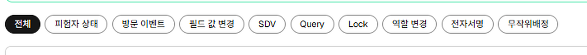
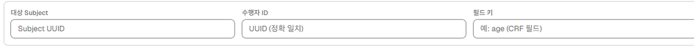
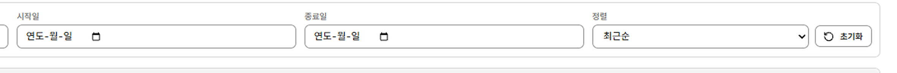
「전체」 — 9종을 모두 봅니다. 처음 들어오면 이 상태입니다.
카테고리 칩 — 누를 때마다 켜지고 꺼집니다. 여러 개를 함께 고를 수 있고, 고른 것이 하나도 없으면 다시 「전체」와 같아집니다.
대상 Subject — 피험자를 UUID 로 지정합니다 (“Subject UUID”). 쉼표로 여러 명을 넣을 수 있습니다.
수행자 ID — 변경을 수행한 사용자를 UUID 로 지정합니다 (“UUID (정확 일치)”).
필드 키 — CRF 필드 이름으로 좁힙니다 (“예: age (CRF 필드)”). 「필드 값 변경」 이력에만 해당합니다.
시작일 — 이 날짜부터. 비워 두면 처음부터입니다.
종료일 — 이 날짜까지. 비워 두면 현재까지입니다.
정렬 — 최근순(기본) 또는 오래된순.
「초기화」 — 카테고리와 필터를 모두 처음 상태로 되돌립니다.
유의사항
오해하기 쉬운 동작
- • 피험자와 수행자는 UUID 로만 찾을 수 있습니다. 입력란이 요구하는 값은 목록 「대상」 열에 보이는 스크리닝번호(S-ONCO-000001)나 사람 이름이 아니며, 그 값을 넣으면 결과가 비어 보입니다. 피험자 UUID 는 변경 이력 상세 창의 「피험자 ID」 1.3 또는 피험자 화면의 주소에서 확인합니다. 특정 피험자의 이력만 보려면 기간과 카테고리로 좁힌 뒤 「대상」 열을 눈으로 찾는 편이 빠릅니다.
1.3변경 이력 상세
개요
이력 한 건을 통째로 보여 주는 창입니다. 이력 정보 · 대상 · 사유 · 변경 전/후 네 묶음이 차례로 놓이고, 맨 아래에 그 이력의 참조 번호가 붙습니다. 담긴 값에 따라 묶음이 늘기도 합니다 — 전자서명 이력이면 서명 정보가, 시스템이 접속 정보를 남긴 경우 IP · 접속 프로그램이 함께 표시됩니다. 이 창에도 고치는 기능은 없습니다.
화면 설명
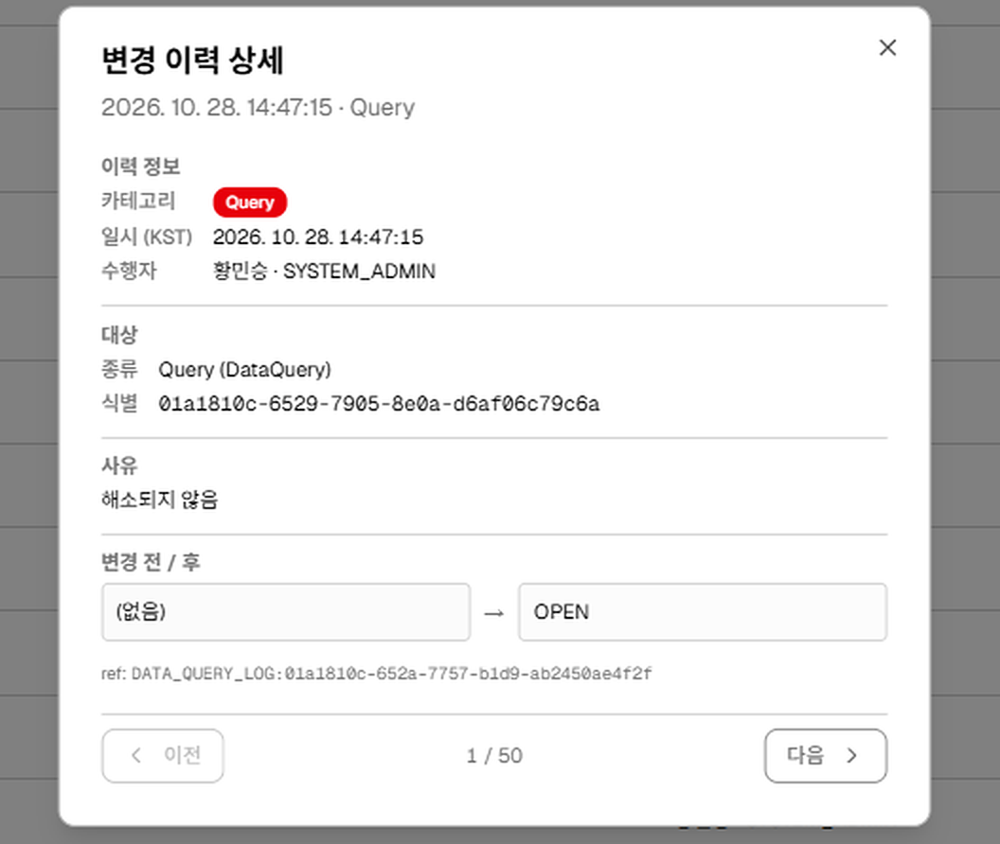
「이전」 / 「다음」 — 목록 순서대로 옆 이력으로 넘어갑니다. 가운데 「1 / 50」 이 지금 위치와 넘나들 수 있는 범위입니다.
닫기(×) — 창을 닫고 목록으로 돌아갑니다.
이력 정보 — 카테고리 · 일시(KST) · 수행자(이름 · 역할). 수행자는 이름 · 역할코드 형태로 표시됩니다.
대상 > 종류 — 한글 이름과 원문을 함께 적습니다 (“Query (DataQuery)”). 시스템에 새로 생긴 종류는 원문만 나옵니다.
사유 — 변경할 때 입력한 사유가 있을 때만 나타납니다.
변경 전 / 후 — 왼쪽이 이전 값, 오른쪽이 바뀐 값입니다. 값이 없던 자리는 「(없음)」 으로 표시됩니다.
참조 번호(ref) — 이 이력 한 건을 가리키는 값입니다. 문의하거나 다른 자료와 대조할 때 이 값을 그대로 전달하십시오. 내려받은 파일의 첫 열과 같은 값입니다 4.3.
유의사항
오해하기 쉬운 동작
- • 「이전 / 다음」은 지금 목록에 불러온 범위 안에서만 움직입니다. 목록은 한 번에 50건씩 불러오므로 캡처처럼 「1 / 50」 이 되고, 51번째 이력으로는 이 창에서 넘어갈 수 없습니다. 더 뒤의 이력을 보려면 창을 닫고 목록 아래에서 「다음」으로 페이지를 넘긴 뒤 다시 여십시오.
규정 준수 안내
- 2.1append-only 안내
- 2.2규정 원문 확인
2.1append-only 안내
개요
목록 위의 초록 띠는 이 화면의 이력을 어떻게 보존하는지를 밝히는 안내입니다. 핵심은 append-only — 한 번 쌓인 이력은 고치거나 지울 수 없고, 바로잡아야 할 일이 있으면 새 이력을 덧붙여 기록합니다. 그래서 이 화면 어디에도 수정·삭제 버튼이 없습니다. 감사자로 들어오면 이 안내가 처음부터 펼쳐진 상태로 표시됩니다.
화면 설명
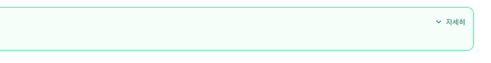
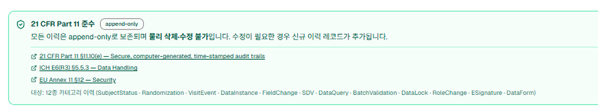
「자세히」 — 안내를 펼칩니다. 펼친 뒤에는 「접기」 로 바뀝니다.
펼치면 근거 규정 3건과 이력 대상 목록이 나타납니다. 규정은 눌러서 원문을 볼 수 있습니다 2.2.
append-only 배지 — 보존 방식을 한 낱말로 표시합니다.
본문 — “모든 이력은 append-only로 보존되며 물리 삭제·수정 불가입니다. 수정이 필요한 경우 신규 이력 레코드가 추가됩니다.”
이력 대상 목록 — “대상: 12종 카테고리 이력 (SubjectStatus · Randomization · VisitEvent · DataInstance · FieldChange · SDV · DataQuery · BatchValidation · DataLock · RoleChange · ESignature · DataForm)”
유의사항
필수 확인 데이터 손상 · 폼 완료 불가
- • 안내의 「12종」과 화면 부제의 「9종」은 다릅니다 — 실제로 조회·추출되는 것은 9종입니다. 안내문의 12종은 제도상 보존 대상 전체이고, 이 화면의 카테고리 칩 · 탭 · 내보내기 범위는 모두 9종입니다. 차이 나는 3종(DataInstance · BatchValidation · DataForm)은 아직 이 화면에 나타나지 않으므로 여기에서 찾지 마십시오. 특히 CRF 양식 자체의 변경 같은 관리·운영 행위는 「운영 이력」 화면에서 확인합니다.
2.2규정 원문 확인
개요
안내에 적힌 규정 이름은 모두 링크입니다. 누르면 새 탭으로 해당 규정의 공개 원문 사이트가 열리고, 작업 중이던 SMART-EDC 탭은 그대로 남습니다. 감사 대응 자료를 준비할 때 근거 조문을 그 자리에서 확인하라는 목적입니다.
화면 설명
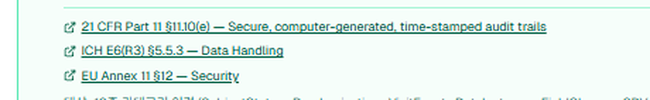
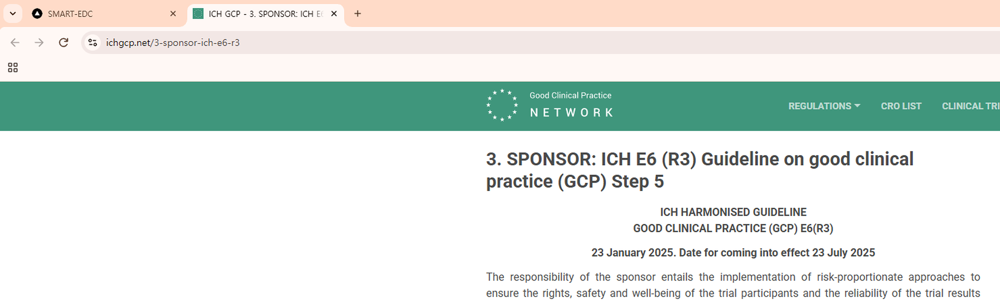
21 CFR Part 11 §11.10(e) — “Secure, computer-generated, time-stamped audit trails”. 미국 FDA 전자기록·전자서명 규정으로, 이 화면의 근거입니다.
ICH E6(R3) §5.5.3 — “Data Handling”. 임상시험 관리기준의 자료 취급 조항입니다.
누르면 새 탭에 원문 사이트가 열립니다.
EU Annex 11 §12 — “Security”. 유럽 전산화 시스템 부속서입니다.
주소가 외부 사이트로 바뀐 것을 확인할 수 있습니다 — SMART-EDC 가 아닙니다.
열린 문서의 제목입니다. 규정 전문이므로 필요한 절을 문서 안에서 찾아 읽습니다.
유의사항
오해하기 쉬운 동작
- • 안내에 적힌 절 번호와 열린 문서의 장 번호가 다를 수 있습니다. 캡처가 그 예로, 안내는 “ICH E6(R3) §5.5.3” 인데 열린 문서의 해당 장은 「3. SPONSOR」 입니다 — 개정으로 장 번호가 바뀐 것이며 내용은 같은 자료 취급 조항입니다. 또한 이들 사이트는 SMART-EDC 가 관리하지 않는 외부 사이트라 주소나 구성이 바뀔 수 있습니다. 제출·보관용 근거가 필요하면 링크가 아니라 기관이 확보한 규정 사본을 사용하십시오.
카테고리별 보기
- 3.1탭 전환과 전용 컬럼
3.1탭 전환과 전용 컬럼
개요
카테고리 하나만 골라, 그 카테고리에만 있는 항목을 열로 세워 보는 화면입니다. 예를 들어 피험자 상태 이력에는 이전 상태 · 이후 상태 열이, 전자서명 이력에는 트리거 · 무효화 열이 붙습니다. 통합 조회와 필터 · 준수 안내 · 상세 창은 그대로 공유하고, 바뀌는 것은 표의 열 구성뿐입니다.
화면 설명


「통합 보기」 — 9종을 한꺼번에 보는 화면 1.1으로 돌아갑니다.
카테고리 탭 — 누르면 그 카테고리만 조회합니다. 지금 보고 있는 탭은 밑줄과 진한 글씨로 표시됩니다.
「보기」 — 통합 조회와 같은 상세 창을 엽니다 1.3.
탭 옆 숫자는 그 카테고리의 전체 이력 건수입니다 — 어디를 봐야 할지 고르는 기준으로 쓰십시오. 0건인 탭도 그대로 표시됩니다.
「수행자」 다음이 바로 전용 컬럼입니다 — 통합 조회에 있던 「요약」 열이 없습니다. 한 줄로 읽히던 내용이 여기에는 나오지 않습니다.
그 자리에 카테고리 전용 컬럼이 들어섭니다 — 방문 이벤트는 「방문」 · 「액션」 2종입니다 (아래 표 참조).
값이 없으면 「-」 로 비워 둡니다. 캡처의 방문 이벤트 탭은 두 열이 전건 「-」 입니다.
카테고리 9종과 전용 컬럼
| 카테고리 | 담기는 변경 | 전용 컬럼 |
|---|---|---|
| 피험자 상태 | 피험자 상태 전이 | 이전 상태 · 이후 상태 · Terminal |
| 방문 이벤트 | 방문 생성 · 수행 · 결측 | 방문 · 액션 |
| 필드 값 변경 | CRF 입력값 수정 | 방문 · 필드 · 변경 유형 |
| SDV | 원자료 대조 수행 | 액션 |
| Query | 질의 열림 · 답변 · 종료 | 액션 · 중요도 |
| Lock | 잠금 · 해제 | Lock 유형 · 액션 |
| 역할 변경 | 프로젝트 역할 배정 변경 | 이전 역할 · 이후 역할 |
| 전자서명 | 서명 · 서명 무효화 | 트리거 · 무효화 |
| 무작위배정 | 배정 · 배정 해제 | 배정 유형 · 배정번호 |
유의사항
필수 확인 데이터 손상 · 폼 완료 불가
- • 이 화면만으로는 무슨 일이 있었는지 알 수 없는 경우가 있습니다. 「요약」 열이 없는 데다 전용 컬럼마저 「-」 로 비면, 캡처의 방문 이벤트 탭처럼 행에 일시 · 대상 · 수행자 만 남습니다. 그때는 행의 「보기」 로 상세를 열거나 「통합 보기」 로 돌아가 요약 열을 읽으십시오 — 전용 컬럼이 비는 것은 그 카테고리가 해당 항목을 기록하지 않기 때문이며, 이력 자체가 비어 있는 것은 아닙니다.
감사 추적 내보내기
- 4.1범위 확인과 실행
- 4.2추출 파일 다운로드
- 4.3내려받은 파일
4.1범위 확인과 실행
개요
목록 오른쪽 위 「CSV/Excel 내보내기」 를 누르면 열리는 창입니다. 파일을 그 자리에서 만들지 않고, 요청만 접수한 뒤 시스템이 뒤에서 만들어 둡니다 — 다 되면 추출 화면에서 내려받습니다 4.2. 창에 담긴 것은 지금 걸려 있는 필터 그대로이므로, 범위를 바꾸려면 창을 닫고 목록 필터를 고칩니다.
화면 설명
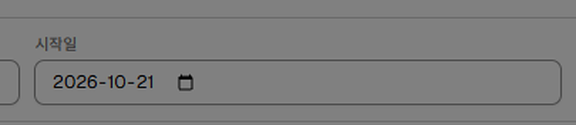
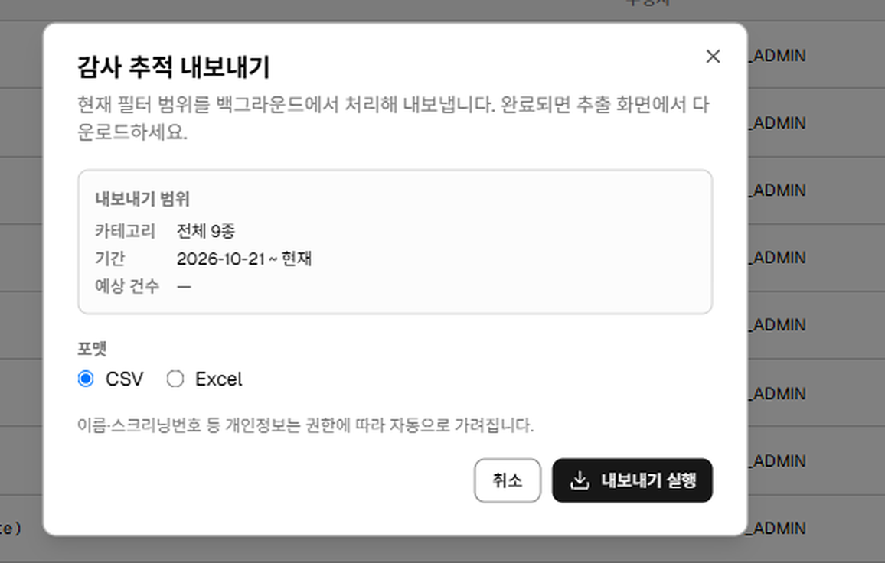
기간을 먼저 지정합니다 — 목록 필터의 시작일 · 종료일 중 하나 이상. 지정하지 않으면 실행 버튼이 눌리지 않습니다(아래 유의사항).
포맷 — CSV(기본) 또는 Excel 중 하나를 고릅니다.
「내보내기 실행」 — 요청을 접수하고 창이 닫힙니다.
“Audit Trail 추출을 시작했습니다. 완료되면 추출 화면에서 다운로드하세요.” 안내가 뜨고 「추출 화면 보기」 로 바로 이동할 수 있습니다 4.2.
카테고리 — 칩으로 고른 것이 그대로 들어옵니다. 고르지 않았으면 「전체 9종」 입니다.
기간 — 종료일을 비웠으면 「~ 현재」 로 표시됩니다.
예상 건수 — 캡처처럼 「—」 로 남는 경우가 있습니다. 목록이 총건수를 세지 않는 방식으로 불러와져서이며 고장이 아닙니다 — 그대로 실행해도 됩니다.
개인정보 안내 — “이름·스크리닝번호 등 개인정보는 권한에 따라 자동으로 가려집니다.” 사용자가 끄고 켜는 설정이 아닙니다.
유의사항
필수 확인 데이터 손상 · 폼 완료 불가
- • 기간을 지정하지 않으면 「내보내기 실행」이 눌리지 않습니다. 창에 “Audit Trail 추출은 기간(시작·종료 중 하나 이상) 지정이 필요합니다. 필터에서 기간을 설정한 뒤 다시 시도하세요.” 경고가 뜨고 버튼이 흐려집니다. 창을 닫고 목록 필터의 시작일(또는 종료일)을 채운 뒤 다시 여십시오 — 전체 기간을 받고 싶더라도 시작일만이라도 넣어야 실행됩니다.
4.2추출 파일 다운로드
개요
요청한 추출이 어떻게 되었는지 보여 주고 파일을 내려받는 화면입니다. 위 카드가 요청 내용(무엇을 · 언제 · 몇 건 · 어떤 포맷), 아래 초록 카드가 결과물입니다. 내보내기 직후 안내의 「추출 화면 보기」 로 오거나, 데이터 내보내기 > 내보내기 이력 에서 해당 건을 눌러 다시 들어올 수 있습니다.
화면 설명
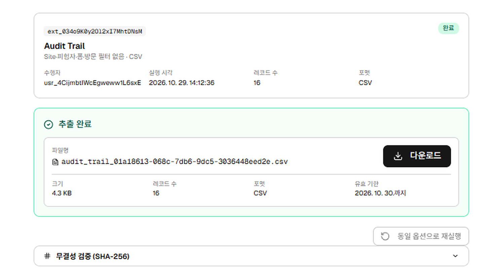
「다운로드」 — 파일을 내려받습니다 4.3.
추출 번호 — 문의할 때 이 값을 함께 알려 주십시오.
유형이 「Audit Trail」 인지 확인합니다. 바로 아래 줄이 그 추출의 범위입니다 — 캡처는 “Site·피험자·폼·방문 필터 없음 · CSV” 입니다.
레코드 수 — 파일에 담긴 이력 건수입니다. 아래 완료 카드에도 같은 값이 다시 표시되므로 두 값이 같은지 보면 됩니다.
유효 기한 — 캡처는 실행 다음 날까지입니다. 지나면 다운로드 링크가 열리지 않습니다.
「동일 옵션으로 재실행」 — Audit Trail 추출에서는 사용할 수 없습니다(아래 유의사항).
「무결성 검증 (SHA-256)」 — 펼치면 파일의 검증값이 표시됩니다. 내려받은 파일이 중간에 바뀌지 않았는지 대조할 때 사용합니다.
상태 — 「완료」 가 되어야 내려받을 수 있습니다. 그 전에는 진행 중 상태가 표시됩니다.
유의사항
필수 확인 데이터 손상 · 폼 완료 불가
- • 「동일 옵션으로 재실행」은 Audit Trail 추출에서 항상 사용할 수 없습니다. 버튼에 “이 추출은 하위 유형 정보가 없어 재실행할 수 없습니다. 내보내기 허브에서 새로 요청해 주세요.” 안내가 붙습니다(추출을 관리할 권한이 없을 때도 같이 비활성됩니다). 유효 기한이 지났거나 파일을 다시 받아야 하면 Audit Trail 화면으로 돌아가 「CSV/Excel 내보내기」를 다시 실행하십시오 4.1.
4.3내려받은 파일
개요
내려받은 파일은 이력 한 건이 한 행인 표입니다. 화면 목록에서 보던 일시 · 카테고리 · 대상 · 수행자 · 요약 · 변경 전/후 · 사유 가 모두 열로 들어 있고, 맨 앞에 상세 창에서 본 참조 번호가 붙습니다. 개인정보는 내려받는 사람의 권한에 따라 이미 가려진 상태로 저장됩니다.
화면 설명
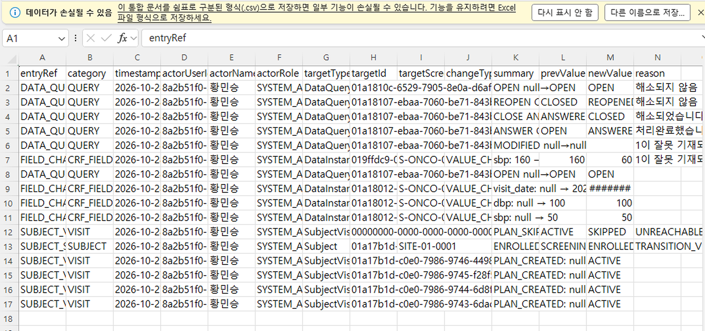
A1 셀이 「entryRef」 — 첫 행이 머리글입니다. 자료를 다룰 때 이 행을 지우지 마십시오.
수행자 이름이 한글 그대로 보이면 정상입니다. 글자가 깨져 보이면 파일을 UTF-8 로 여십시오.
「#######」 은 열이 좁아 날짜를 다 못 쓴 표시입니다 — 값이 잘못된 것이 아니므로 열 경계를 두 번 눌러 넓히면 보입니다.
데이터는 17행에서 끝납니다 — 머리글 1행을 뺀 16건으로, 추출 화면의 레코드 수 4.2와 같습니다. 두 값이 다르면 파일이 온전하지 않은 것입니다.
Excel 이 “이 통합 문서를 쉼표로 구분된 형식(.csv)으로 저장하면 일부 기능이 손실될 수 있습니다” 라고 알립니다 — 파일이 손상된 것이 아닙니다.
열 구성 (캡처 기준 14열)
| 열 | 담기는 내용 |
|---|---|
| entryRef | 이력 한 건의 참조 번호 — 상세 창 맨 아래의 ref 와 같은 값 |
| category · timestamp | 카테고리 코드 · 변경 시각 |
| actorUserId · actorName · actorRole | 수행자 ID · 이름 · 역할 |
| targetType · targetId · targetScreeningNo | 대상 종류 · 식별자 · 스크리닝번호 |
| changeType · summary | 변경 유형 · 한 줄 요약 (목록의 요약 열) |
| prevValue · newValue · reason | 변경 전 값 · 변경 후 값 · 사유 |
유의사항
필수 확인 데이터 손상 · 폼 완료 불가
- • 내려받은 파일은 원본 그대로 보관하십시오. Excel 의 안내에 따라 「다른 이름으로 저장」으로 형식을 바꾸거나 열 너비·정렬을 고친 뒤 덮어쓰면, 제출·감사 근거로 쓸 원본이 사라집니다. 손봐야 할 일이 있으면 사본을 만들어 사본에서 작업하고, 원본은 추출 화면의 검증값(SHA-256) 과 함께 그대로 두십시오.